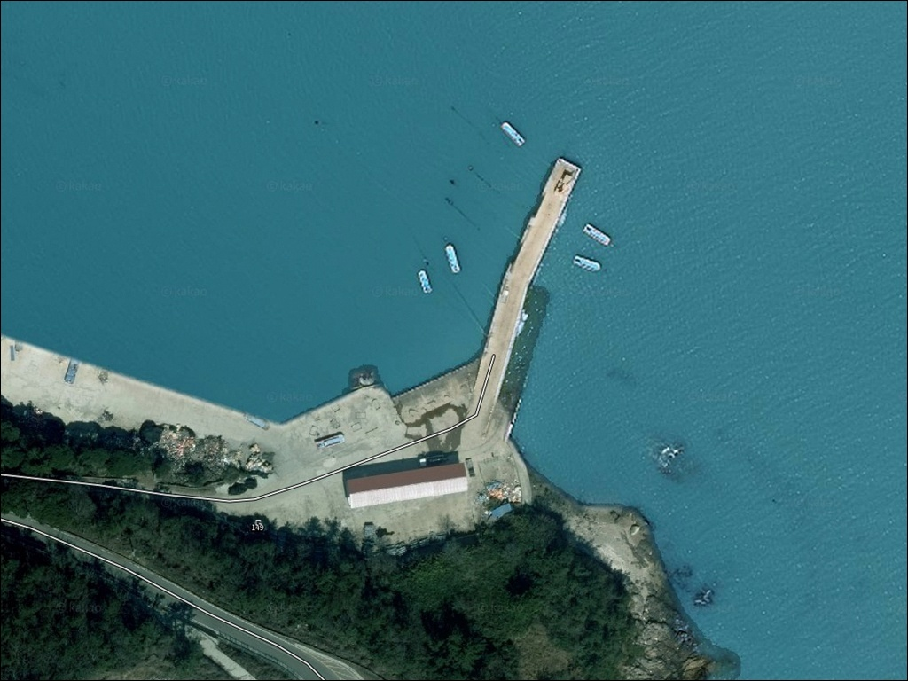
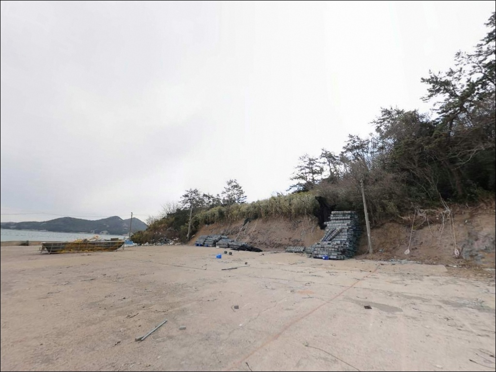
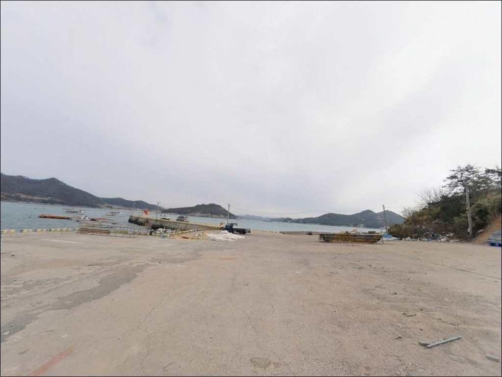
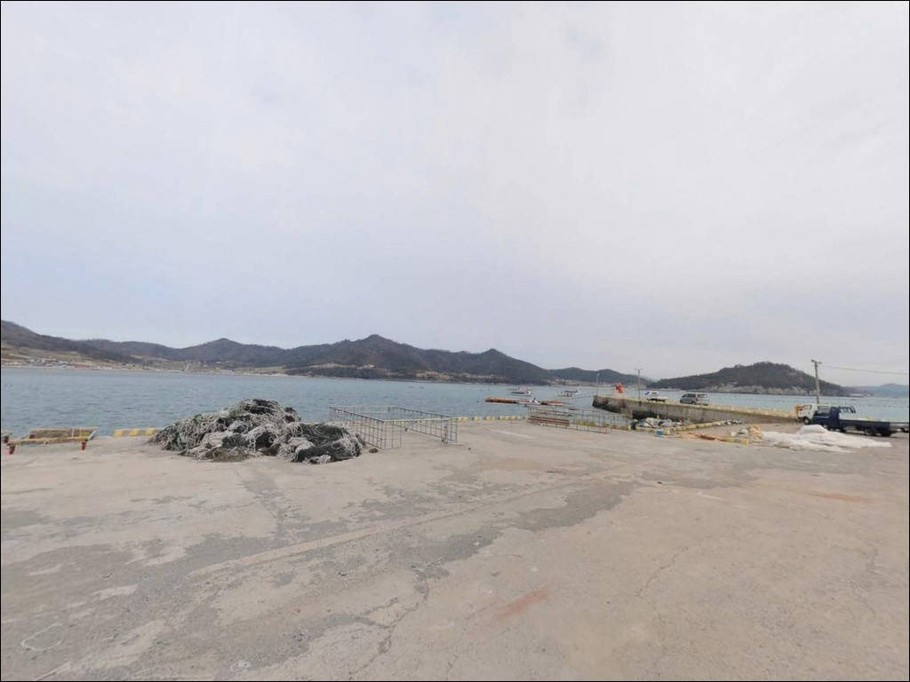
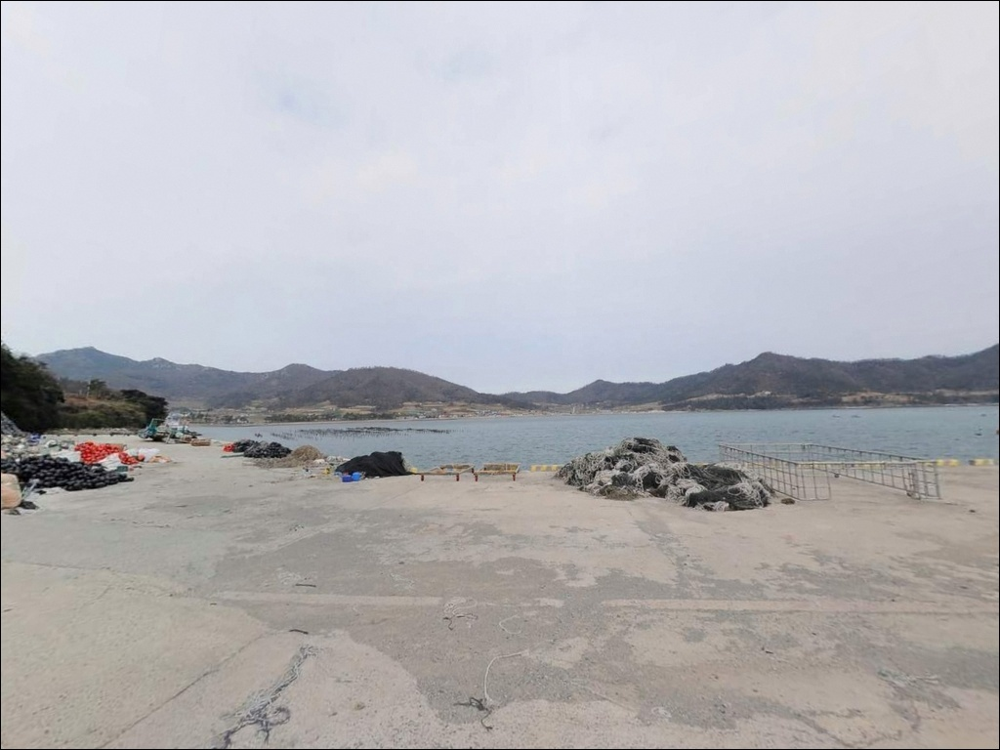
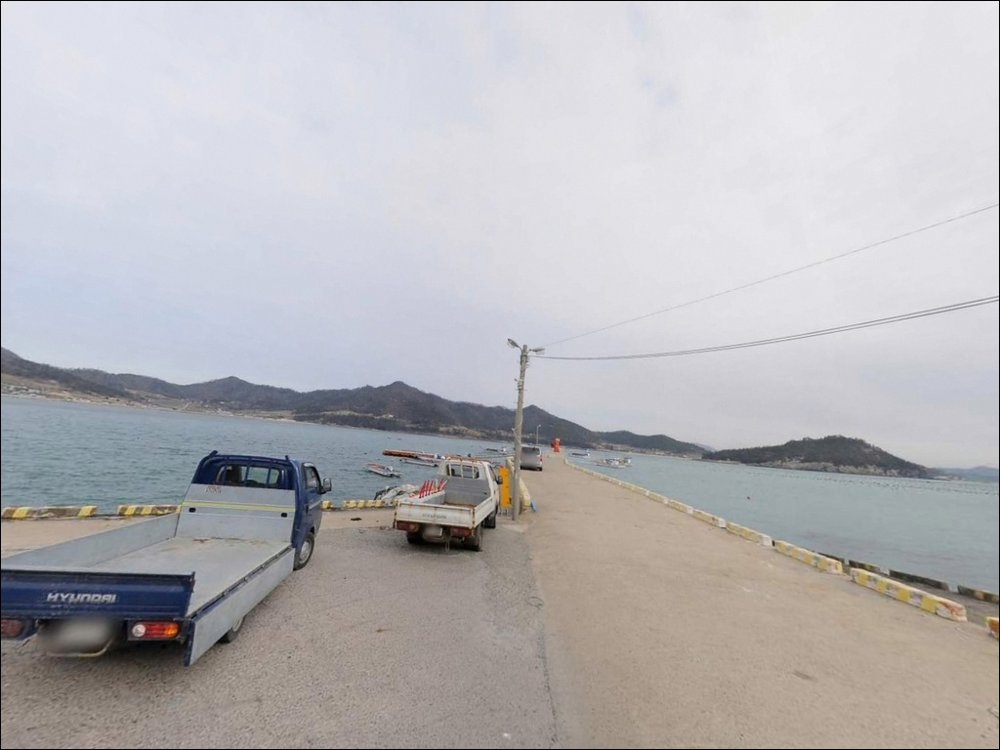
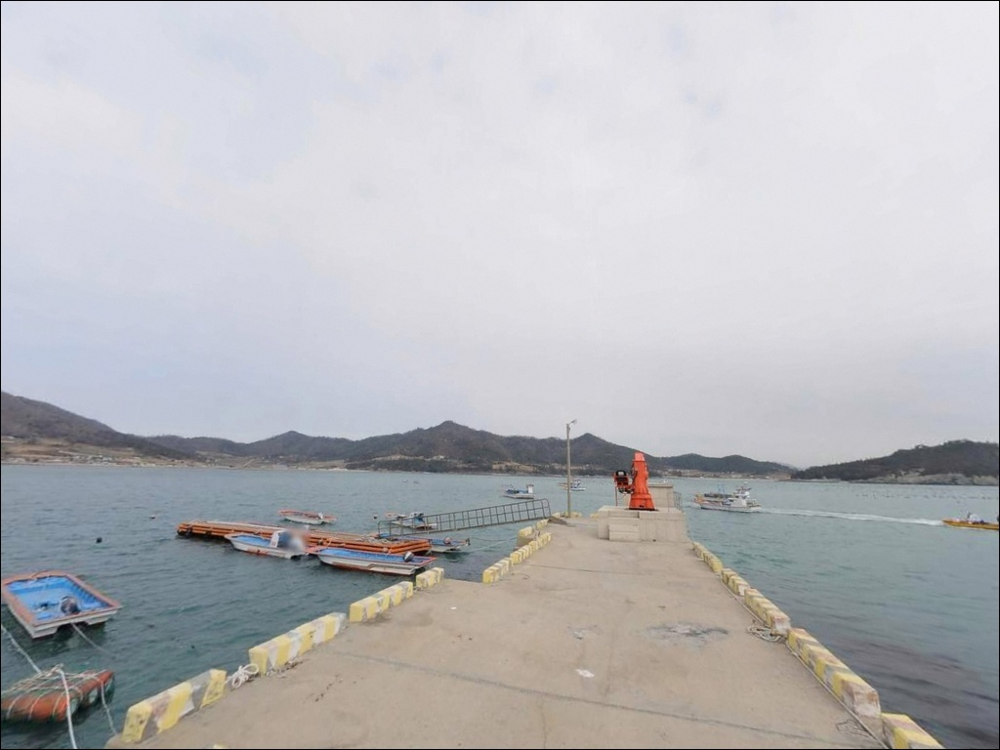
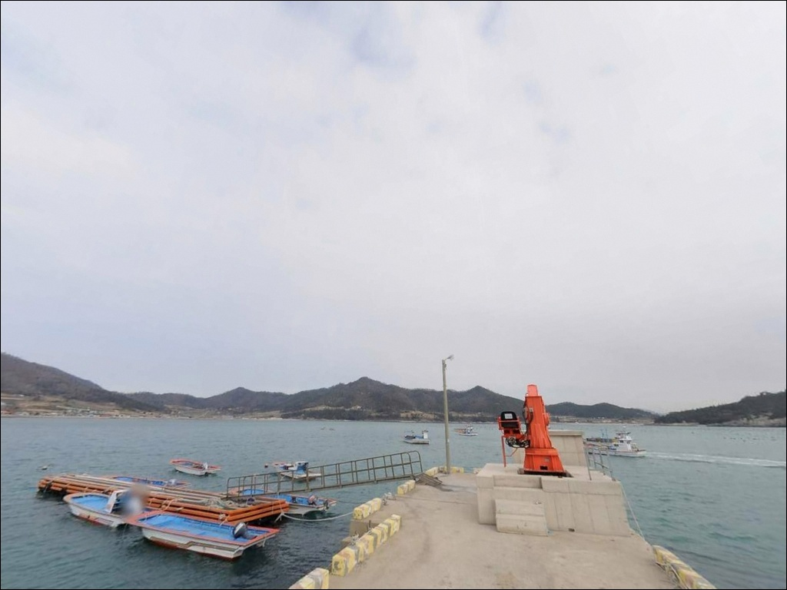
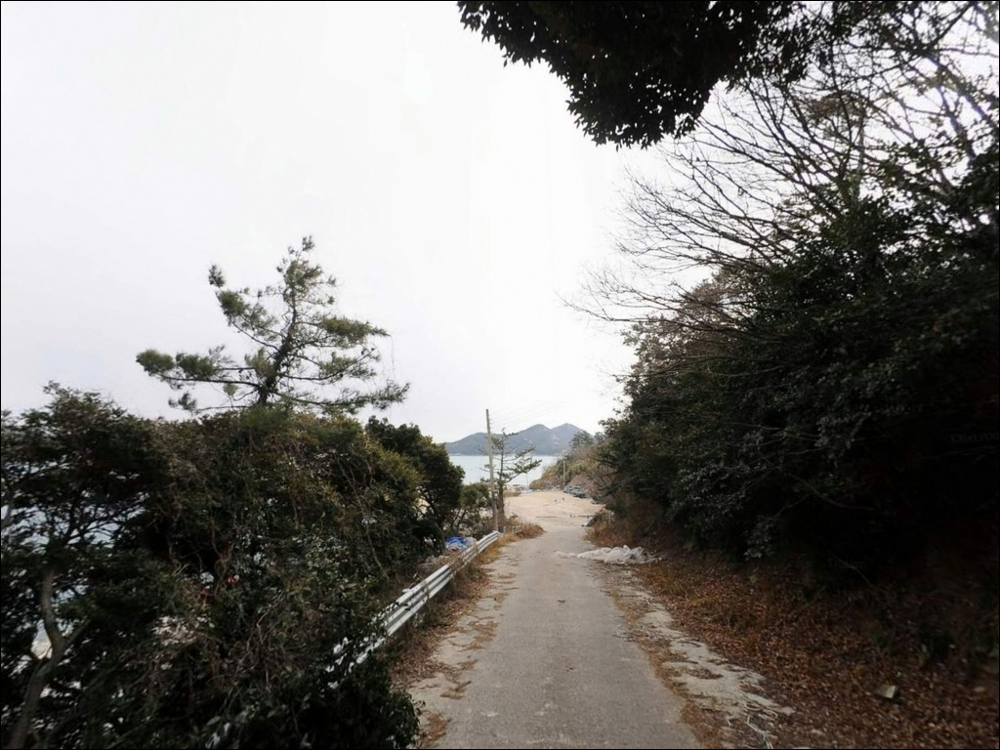

죽림리 선착장, 진도 전남 진도군 자연의 여백을 느낄 수 있는 차박, 낚시 명소
이 페이지에는 광고(제휴 링크 포함)가 있으며, 광고 링크를 통해 구매하면 운영자가 판매 수익 또는 수수료를 받을 수 있습니다. 포인트 사진: 카카오맵 스카이뷰·로드뷰. 이 페이지의 지도·사진 이미지는 카카오맵의 실제 서비스 이미지와 다를 수 있습니다.


포인트 안내
죽림리 선착장
전남 진도군 임회면 죽림리 406-10
썰물에 접근한 낚시인은 선착장 앞이
펼쳐진 갯벌로 바뀐 것을 보고
헛걸음을 직감합니다.
죽림리 선착장은 4만 평 규모의 갯벌과
바로 맞닿은 내만형 포구로,
조수간만 차가 낚시 여건을 전부 결정하는
구조입니다.
진도군 임회면 죽림리는
북쪽 여귀산이 병풍처럼 둘러서 있고
동·남쪽으로 바다가 열린 지형입니다.
죽림·강계·동헌 세 마을로 이루어진
죽림권역 앞바다는 완만한 내만 구조로,
전형적인 어촌 선창의 조용한 낚시 탐색지로
활용할 수 있는 포인트입니다.
이 글은 죽림리 선착장의
진입 동선, 물때 판단 기준, 차박 여건,
지형 기반 낚시 방식 적합성에 집중합니다.
직접 조황 기록이나 특정 어종 보장은
이 글의 범위에 포함되지 않습니다.

1. 진입 동선과 포인트 접근성
죽림리는 임회면을 동서로 관통하는
국도 18호선에서 마을 도로로 진입하는 구조입니다.
죽림어촌체험마을 안내소까지는
포장 마을도로를 통해 접근할 수 있으며,
국도에서 선착장까지의 마지막 구간은
좁은 차로 구간이 포함된 농어촌 수준의 도로입니다.
장축형 캠핑 차량이나 대형 SUV는
출발 전 위성지도로 진입로를
반드시 확인하는 편이 안전합니다.
선착장 물양장 앞 공간은 어선 작업에
우선적으로 사용되는 구역이므로,
어선 입출항 시간대와 겹치지 않는 주차 자리를
먼저 파악해야 합니다.
주차 후보는 죽림어촌체험마을 공식 주차장으로,
관광 정보에 안내소 주변 주차장, 무료로
기재되어 있는 확인된 공간입니다.
낚시와 주차를 병행할 경우
이 주차장을 기점으로 삼는 방식이
현실적으로 가장 안정적입니다.

2. 차박 환경과 야간 체류 여건
죽림권역은 죽림·강계·동헌 세 마을이
인접한 어촌 생활권입니다.
민가와 마을회관, 보건진료소가
선착장에서 가까운 위치에 있어
야간에도 어느 정도 생활 조명이 있는 편이며,
차량 통행은 마을 생활 차량 위주로
정숙한 편입니다.
차박은 어촌체험마을 공식 주차장 가장자리를
활용하는 방식이 현실적입니다.
단, 체험마을 주차장은 관광·체험객용으로
조성된 공간이기 때문에,
야간 장시간 이용 전에는
사무국(061-544-6645)에 미리 문의하는 편이
안전합니다.
어촌체험마을 성격상 낮 시간에는
방문객 이동이 잦을 수 있습니다.
낚시 후 조용히 하룻밤 머무는 용도로는
나쁘지 않은 환경이지만,
민가와의 거리가 가까운 포인트이므로
소음과 조명 사용을 최소화하는 것이
지역과의 마찰을 줄이는 기본입니다.


3. 주변 편의시설 및 인프라 현황
죽림리 선착장 반경 3km 이내에는
대형 마트나 편의점 등
독립된 편의 인프라가 확인되지 않습니다.
완전 자급 체제로 진입하는 것이
이 포인트를 방문하는 현실적인 준비 방식입니다.
식수, 식재료, 낚시 소품, 연료 모두
진도읍에서 미리 갖춰야 합니다.
죽림어촌체험마을 안내소 주변에
화장실이 확인된 시설로 소개되어 있어,
낚시 체류 중 기본 위생 시설은
이를 활용하는 방식이 가능합니다.
임회면 전반이 읍내를 제외하면
편의 인프라가 드문 지역이므로,
응급상황을 대비한 비상약품과 수분 준비도
출발 전 점검 항목에 포함해야 합니다.
반경 10km권으로 이동하면
서망항 방면의 기초 생활 인프라와
임회면 소재지 방향의 마트·식당을
활용할 수 있습니다.
포인트 탐색 전에 이 동선을 먼저 파악해두는 편이
불필요한 이동을 줄이는 방법입니다.

4. 진입 전 반드시 챙겨야 할 준비사항
죽림리 선착장 방문 전에 가장 먼저
확인해야 할 것은 물때입니다.
4만 평 규모의 갯벌과 접한 내만형 포구는
사리 전후 썰물에 선착장 앞이
갯벌로 완전히 드러날 수 있는 구조입니다.
바다타임에서 임회면 기준 물때를 확인하고,
조금 전후 또는 만조 전후를 기준으로
출발 시각을 맞추는 것이 기본입니다.
진도 해역은 기상 변화가 빠른 편입니다.
기상청 해상예보를 출발 당일 아침
한 번 더 확인하는 것이
포인트 낭비를 막는 조건입니다.
선착장 콘크리트 바닥은 이끼와 해수로
미끄러울 수 있어,
미끄럼 방지 신발과 헤드랜턴은
야간 낚시 전 필수 점검 항목입니다.
어촌체험마을 포구인 만큼
어선 계류줄, 어망, 어구에 접촉하거나
훼손하지 않는 것이 기본 매너이며,
진도 해역에는 전복·김 양식구역이 분포하므로
양식 구역 근접 낚시에는 사전 확인이 필요합니다.
발생한 쓰레기는 전량 수거해
소규모 마을 선창의 인상을 지켜야 합니다.

5. 갯벌과 물골이 만드는 낚시 지형 분석
죽림리 선착장의 낚시 여건을 좌우하는 핵심은
조수간만 차입니다.
내만권 갯벌형 포구는 간조 시
선착장 전면이 넓게 드러나고,
만조 전후에는 배가 드나드는 물골 주변을
중심으로 수심이 상대적으로 확보됩니다.
물골 가장자리와 수심이 급변하는 턱 구간이
이 포인트에서 노려볼 만한 자리입니다.
소형선 부두와 물양장 구조상
선착장 상부는 평탄한 콘크리트 형태이며,
대형 방파제나 테트라포드보다는
마을 포구 형태에 가깝습니다.
바닥은 모래와 뻘이 혼합된 저질로
밑걸림은 심하지 않은 편이며,
채비를 멀리 보내는 원투 방식이
이 지형과 잘 맞습니다.
진도 내만권 해안선에서 공통적으로
들물과 중들물 전후의 조류 흐름을
활용하는 낚시 패턴이 확인됩니다.
죽림리 역시 같은 해안선에 속하므로
조류가 살아나는 물때 타이밍에
어종 활성도가 높아지는 구조입니다.
출조 전에 죽림리 일대 최신 조황을
검색해 두는 것이 현장 판단에 도움이 됩니다.


6. 포인트 지형에 어울리는 낚시 스타일
이 포인트에서 가장 무난하게 운용할 수 있는
방식은 원투낚시입니다.
모래·뻘 혼합 저질의 완만한 바닥과
넓게 열린 내만 수면은
채비를 멀리 보내
물골 경계를 탐색하기에 적합한 조건입니다.
같은 임회면 해안선 일대에서
가을부터 겨울 사이 감성돔·붕장어를
원투로 노리는 패턴이 확인됩니다.
찌낚시도 이 포인트 구조에 어울립니다.
소형 선창의 수심 턱과 물골 경계는
전·반유동 찌채비로 조류를 타며
탐색하기 좋은 조건입니다.
들물 시간대에 선착장 외측에서
조류 방향을 따라 흘려주는 방식이
감성돔·숭어를 노리는 데 맞는 운용법입니다.
가벼운 루어낚시도 탐색용으로 활용할 수 있습니다.
임회면 인근 해안선에서 우럭·볼락·농어
계열 어종이 기대되는 지형이며,
소형 지그헤드나 소프트베이트 계열로
선착장 외측 및 석축 주변을
천천히 탐색하는 방식이
이 규모의 포구에 맞는 루어 운용입니다.
야간에는 볼락 라이트게임도 노려볼 만합니다.

7. 대안 포인트와 플랜 B 동선
죽림리 선착장이 물때나
현장 여건이 맞지 않을 때
가장 먼저 고려할 대안은
같은 임회면 해안선의
헌복동 방파제입니다.
죽림리 바로 옆 소형 포구마을로,
평균 수심 약 6m의 방파제 구조가
갖춰져 있어 찌낚시 운용이
더 정형화된 편입니다.
거리를 더 두고 이동할 수 있다면
임회면 남동리의 서망항이
가장 안정적인 대안입니다.
1986년 국가어항으로 지정된 곳으로
500m 규모의 방파제에
수심 6~10m 수준이 확보되어 있으며,
진도 남부권에서 낚시 인프라가
가장 잘 갖춰진 포인트입니다.
진도 남동부로 이동할 여유가 있다면
의신면 초평항 방파제도 노려볼 만합니다.
모래·뻘 혼합 저질에
원투·찌·루어 등 다양한 방식이
소개된 포인트로,
죽림리 현장이 기대에 못 미칠 경우
초평항을 보조 탐색지로 묶어
이동하는 동선이 효율적입니다.

아직 덜 알려진 조용한 포구,
물때만 맞으면 쓸 만한 자리입니다
원투낚시나 찌낚시를 즐기는 낚시인 중
복잡한 인기 방파제 대신
조용한 어촌 선창을 탐색하고 싶은 분이라면
죽림리 선착장은 시도해볼 만한
후보 포인트입니다.
대물을 기대하는 자리라기보다는,
내만 지형을 활용한
탐색형 낚시에 어울리는 구조입니다.
반면 물때 계산 없이 내려가거나
편의시설 없이 장비만 챙겨 간다면
빈 갯벌 앞에서 발길을 돌리는 상황을
맞닥뜨릴 수 있습니다.
물때 확인, 자급 준비, 진입로 사전 점검,
이 세 가지를 갖추고 찾아간다면
조용한 포구 낚시의 맛을
느낄 수 있는 곳입니다.
어촌체험마을 주차장을 활용한
간소한 차박과 낚시를 병행하고 싶은 분이라면,
야간 이용 가능 여부를 사전에 확인하고
마을 생활 동선을 배려하는 방식으로
접근하면 오래 기억에 남는
조용한 진도 포구 여행이 될 수 있습니다.